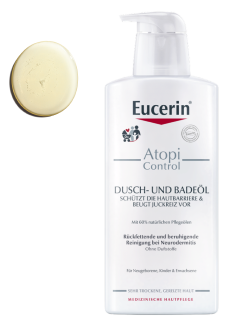
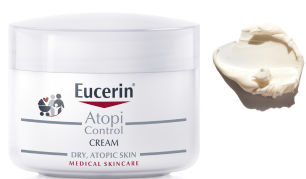

Модуль 4 из 4
Уход за сухой кожей
СУХАЯ КОЖА (Ксероз)
Нарушенные барьерные свойства на уровне рогового слоя.
Основные клинические симптомы:
- Шероховатость/грубость
- Шелушение
- Стянутость
- Видимый рельеф
- Повышенная раздражимость кожи
- Болезненные микротрещины
ВИДЫ СУХОЙ КОЖИ
СУХАЯ КОЖА
Кожа теряет влагу и становится:
- Стянутой
- Шелушащейся
ОЧЕНЬ СУХАЯ КОЖА
Кожа без ухода продолжает терять влагу и становится:
- Очень стянутой
- Сильно шелушащейся
- Чешуйчатой
- Зудящей
ОЧЕНЬ СУХАЯ УТОЛЩЕННАЯ КОЖА
Отдельные части тела, особенно руки, ноги, локти, колени подвержены
- Экстремальной стянутости
- Огрубению
- Гиперкератозу
- Трещинам
- Интенсивному зуду
РАЗЛИЧНЫЕ СОСТОЯНИЯ КОЖИ
СУХАЯ И ОЧЕНЬ СУХАЯ КОЖА ТЕЛА
- Сухая/очень сухая
- Шершавая/шероховатая
- Шелушение
- Зуд
КСЕРОЗ, ПСОРИАЗ
- Грубая
- Зуд
- Сильное шелушение
АТОПИЧЕСКИЙ ДЕРМАТИТ
- Сухая
- Покраснение
- Зуд
ОЧИЩЕНИЕ
СУХОЙ КОЖИ
ATOPI CONTROL ОЧИЩАЮЩЕЕ МАСЛО ДЛЯ ДУША И ВАННЫ ДЛЯ ДЕТЕЙ

ОМЕГА 3-6-жирные кислоты
Источник: касторовое и соевое масло. Восполняют недостаток в жирных кислотах, укрепляя кожный защитный барьер и улучшая сцепление между клетками
ПОЛИДОКАНОЛ
Противозудный эффект
UREAREPAIR ОЧИЩАЮЩИЙ ФЛЮИД С 5% МОЧЕВИНОЙ
МОЧЕВИНА 5%
Глицерин, лактат натрия, молочная кислота - компоненты натурального увлажняющего фактора, способствуют увлажнению кожи
УХОД
ЗА СУХОЙ КОЖЕЙ ЛИЦА
ATOPI CONTROL КРЕМ ДЛЯ ВЗРОСЛЫХ, ДЕТЕЙ И МЛАДЕНЦЕВ
Очень сухая кожа, раздражение, атопия

ОМЕГА 3-6-жирные кислоты
Восполняют недостаток в жирных кислотах, укрепляя кожный защитный барьер и улучшая сцепление между клетками
ЦЕРАМИДЫ
Восстанавливают и укрепляют защитный барьер, предотвращая сухость кожи
ЛИКОХАЛКОН А
Противовоспалительные, антибактериальные, антиоксидантные свойства
UREAREPAIR УВЛАЖНЯЮЩИЙ КРЕМ С 5% МОЧЕВИНОЙ
Очень сухая кожа, шелушение

МОЧЕВИНА 5%
+ компоненты NMF способствуют увлажнению кожи
МАСЛО КАРИТЕ
Смягчает и увлажняет кожу
УХОД
ЗА СУХОЙ КОЖЕЙ ТЕЛА
ATOPI CONTROL ЛОСЬОН ДЛЯ ТЕЛА ДЛЯ ВЗРОСЛЫХ, ДЕТЕЙ И МЛАДЕНЦЕВ
Очень сухая кожа, раздражение, атопический дерматит
ОМЕГА 3-6-жирные кислоты
Восполняют недостаток в жирных кислотах, укрепляя кожный защитный барьер и улучшая сцепление между клетками
ЛИКОХАЛКОН А
Противовоспалительные, антибактериальные, антиоксидантные свойства
ЦЕРАМИДЫ
Восстанавливают и укрепляют защитный барьер, предотвращая сухость кожи
UREAREPAIR УВЛАЖНЯЮЩИЙ ЛОСЬОН С 10% МОЧЕВИНОЙ
Очень сухая кожа, шелушение

МОЧЕВИНА 10%
+ компоненты NMF способствуют увлажнению кожи
ГЛИКО-ГЛИЦЕРОЛ
Усиливает увлажнение глубоких слоев эпидермиса за счет активации Аквапоринов – каналов распределения влаги
МАСЛО КАРИТЕ
Смягчает и увлажняет кожу
ЦЕРАМИДЫ
Восстанавливают и укрепляют защитный барьер, предотвращая сухость кожи
UREA REPAIR plus 30%
интенсивно-восстанавливающий крем

БЫСТРЫЙ И ВИДИМЫЙ РЕЗУЛЬТАТ
БЕЗОПАСНОЕ И ЭФФЕКТИВНОЕ РЕШЕНИЕ ПРОБЛЕМЫ ГИПЕРКЕРАТОЗА
УХОД
ЗА СУХОЙ КОЖЕЙ РУК
EUCERIN UreaRepair
увлажняющий крем для рук
Мгновенно и надолго увлажняет кожу и предотвращает потерю влаги
Восстанавливает естественный барьер кожи

Мочевина 5%, церамиды, компоненты NMF (молочная кислота, лактат натрия, аланин, карнитин, глицин, аргинин, Na PCA), масло подсолнечника.
Без отдушек, без парабенов, без парафина, без красителей.
Быстро впитывается, эффект сохраняется даже после мытья рук (до 6 раз).
УХОД
ЗА СУХОЙ КОЖЕЙ губ
EUCERIN ACUTE LIP BALM
Успокаивающий и увлажняющий бальзам для губ
Смягчает, успокаивает, увлажняет губы
Уменьшает покраснение и раздражение
Восстанавливает кожу вокруг губ

Ликохалкон А, масло примулы вечерней, декспантенол (пантенол) , глицерол, касторовое масло, масло карите, токоферол (витамин Е) , белый воск
Без отдушек и красителей, подходит для детей с 3х лет.